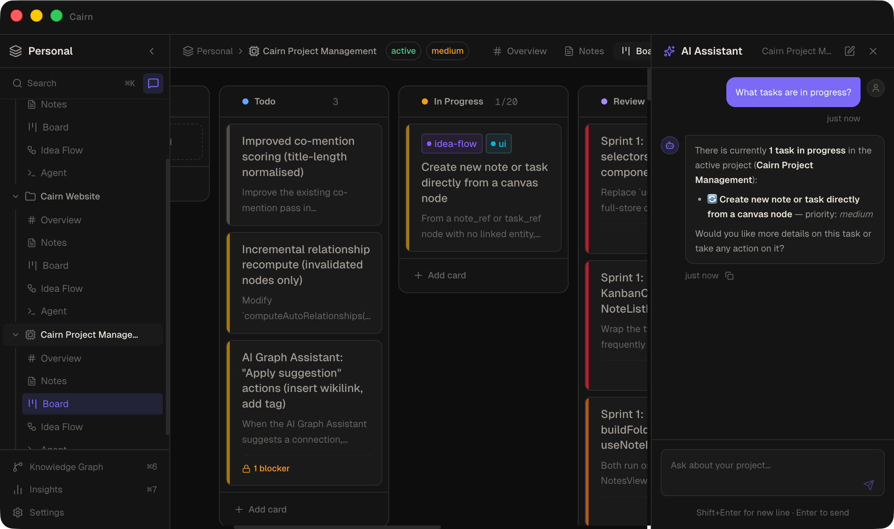
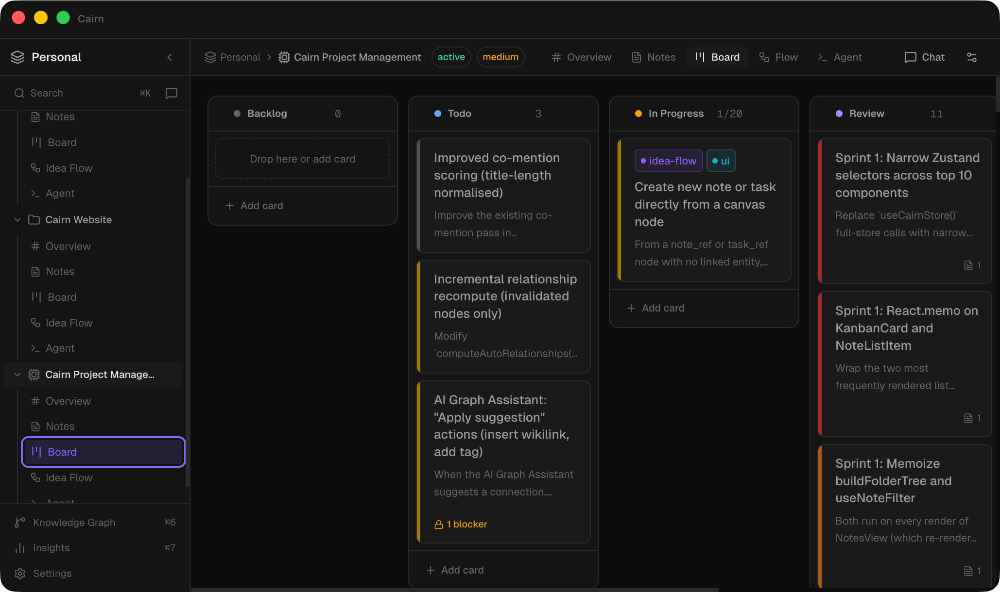
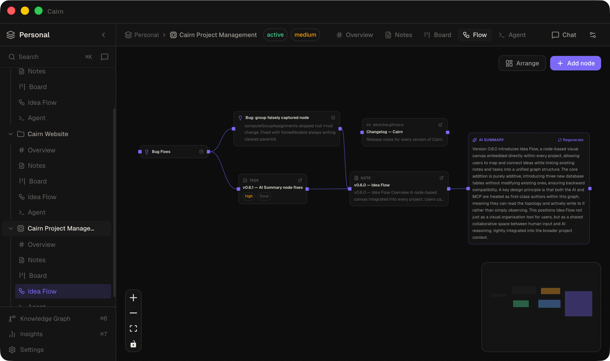
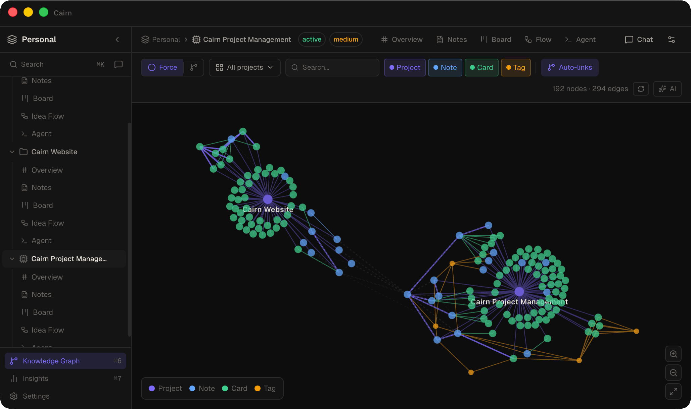

Context collapse at session boundaries
I've been using AI coding agents daily since late 2024. The productivity gains are real — but so is a failure mode that doesn't get talked about enough: every new agent session starts from zero.
The agent has no memory of what was decided in the previous session. No record of what was abandoned and why. No access to the planning notes sitting in a separate tool. You spend the first fifteen minutes of every session re-briefing an agent that should already know the situation. Then it does the work. Then the session ends, and everything it learned disappears.
I tried to solve this with plain markdown files — dropping PLANNING.md and CONTEXT.md into project folders and pointing agents at them. It worked, partially. But it was manual, unstructured, and had no task layer. No way to drive agent work from a board. No cross-project visibility. No audit trail. I knew what the agent said it had done. I had no way to verify it.
I tried Obsidian with an MCP plugin — closer to the right idea, but with two hard blockers: Obsidian had to be open and running for the MCP server to work, and there was still no task tracking layer. Notes without tasks meant no way to close the loop between planning and execution.
The problem wasn't the agent's capability — it was the infrastructure around it. The gap was the tool, not the model.
What I needed was something that didn't exist: a project management tool designed from the ground up to be read and written by both humans and AI agents, simultaneously, in real time.
The signal that this isn't just me
At work, engineers had organically started leaving more and more .md files in the codebase — FEAT_PLAN_XXX.md, CONTEXT.md, OPEN_QUESTIONS.md. No mandate. No process. They were doing it because their agent sessions worked better when the context was already there.
That's a reliable signal. When developers converge on the same workaround without coordinating, it's not a preference — it's a gap in the ecosystem. Cairn is the formalised version of what people are already doing by hand.
One weekend. A recursive feedback loop.
The problem surfaced on a Friday. I wanted to fix it that weekend.
What made a weekend build feasible wasn't just time — it was that the agent developing Cairn had MCP access to Cairn from the start. As soon as the MCP server was functional (which was early, because everything else depended on it), development velocity compounded. The agent building the app could see the project state it was building in real time. It could read the planning notes, update task cards as features were completed, and move to the next ticket without being re-briefed.
The clearest example: building the marketing website. I created design language docs, a feature overview, and a sitemap as notes inside a Cairn project. Then I opened a second project for the website and told the agent: "build a site from the notes in Cairn." It did — in one session.
Desktop app · AI assistant · MCP server · Marketing website · All in one weekend.
One thing was cut to hit Sunday: a plugin system for third-party integrations. Everything else shipped.
The shared data layer
The central architectural bet is that the human and the agent use the same data layer, simultaneously, in real time. There is no separate "agent context" synced periodically to a human-visible store. When an agent creates a task card, it appears on the kanban board immediately. When a human edits a note, the agent's next read sees the edit. Same SQLite database. Same .md files on disk.
This sounds simple. It caused the most interesting engineering problems in the project.
SQLite in WAL Mode
SQLite in Write-Ahead Logging mode is the foundation. WAL allows multiple processes to read and write the same database file concurrently without locking — which is exactly what's needed when the Electron app and the standalone MCP server binary are both active. The synchronous better-sqlite3 driver keeps reads instant — no async overhead, no loading states, no round-trips.
Notes live in two places simultaneously: as rows in SQLite (for structured queries, tagging, linking, and full-text search via a stripped content_text column) and as .md files on disk (for portability, external editor access, and git compatibility). The filesystem is not a cache — it's a first-class citizen.
Multi-Process Architecture
The renderer never touches the database or filesystem directly. All writes go through the contextBridge to the main process. External writes from the MCP server arrive via WAL polling — the renderer detects a changed cairn.db-wal mtime, fires db:changed, and re-hydrates state from Electron.
Why Electron + Next.js
A browser app was ruled out early. The hard requirements — native SQLite bindings, arbitrary filesystem access, PTY sessions for agent terminals, background file watching, PDF export — are not achievable in a browser sandbox. A native Swift app was ruled out because the UI surface (React Flow canvas, CodeMirror editor, xterm.js terminal, D3 knowledge graph) would have been enormous to reimplement natively, and Swift is macOS-only. Electron gives macOS, Windows, and Linux from one codebase.
Next.js with App Router and output: 'export' produces a static bundle that Electron loads via a custom app:// protocol. No SSR, no server routes — equivalent to Vite output, but with React 19 ergonomics and room for server features if the product ever moves online.
The MCP Server
The MCP server is a standalone binary — packaged from a single mcp-server.ts entry point with no Electron dependency. When an agent runtime (Claude Desktop, OpenCode, Aider) starts a session, it spawns the binary via stdio transport. The binary opens cairn.db directly and registers 37 tools spanning full CRUD over notes, tasks, projects, tags, idea flow, dashboards, and the knowledge graph.
The in-app AI chat exposes the same tool set. Ask it "what tasks are in progress?" and it reads the board directly and responds — no copy-pasting, no context window management. The same tools available to external MCP agents are available directly in the interface.
The decision to build an MCP server rather than a REST API came down to three things: ecosystem fit (MCP is what modern agent runtimes already speak natively — no custom client needed), schema reuse (all 42 tool schemas live in one Zod file, consumed by both the in-app chat and the MCP server), and process lifecycle (the stdio transport means the agent runtime owns the MCP process — zero configuration, no long-running daemon).
Five tools were kept in-app only: anything requiring live Electron renderer state, recursive LLM calls, or renderer-rendered UI. The design principle: if it can't be meaningfully executed in a headless stdio process, it doesn't belong in MCP.

What went wrong first
The file watcher caused duplicate and lost notes.
The dual-write architecture — SQLite and .md files simultaneously — created an echo-loop: when the app wrote a note to disk, chokidar fired. If nothing suppressed that event, the watcher re-imported the file it just wrote, collided with the existing database row, and threw a UNIQUE constraint error. Notes appeared to disappear or duplicate.
The fix has two parts. suppressNextChange(noteId) arms a 2-second suppress window per note ID before every own write — any chokidar event for that note within the window is silently dropped. ownWriteGuard is a global 3-second timestamp in the renderer's IPC store; when a db:changed event arrives, the renderer checks whether the last own write was within 3 seconds and skips re-hydration if so.
These mechanisms solve the echo-loop — the most common failure mode. What they don't solve is true simultaneous edits: if both a human and an agent write the same note within ~300ms, the last SQLite write wins and the other's changes are silently lost. No merge, no conflict flag. A deliberate MVP trade-off; the right solution in v2 is CRDT-based conflict resolution.
The biggest decision I'd redo
Starting with a DB-only layer and migrating to the hybrid architecture midway through. The original design stored everything in SQLite alone. The decision to also write notes as .md files — for portability, readability, and external editor access — came partway through the build. That mid-build migration is what surfaced the file watcher race conditions and required rebuilding the entire note write path.
The architecture that exists today is correct. It just wasn't the starting point. Starting with the hybrid layer from day one would have avoided a painful and disruptive rework.
A fully functional desktop app
- Kanban board — with dependency tracking, blocking relationships, priority, and due dates
- Markdown notes — CodeMirror 6 editor, wikilinks, frontmatter, folder organisation, full-text search
- Idea Flow — a node canvas (React Flow) where notes, tasks, URLs, and AI summaries connect and auto-arrange via Dagre
- Knowledge Graph — a D3 force graph of auto-discovered relationships across the entire workspace
- Live dashboards — sandboxed HTML panels with a
window.cairn.query()API for live data reads - Built-in agent terminal — launches Claude Code, OpenCode, Aider, or any CLI with task context pre-filled from board cards
- MCP server — 37 tools for full CRUD over the entire workspace, exposed to any MCP-compatible agent runtime
- Marketing website — designed and built inside Cairn, by an agent connected to Cairn



What I learned
Context is the real bottleneck, not capability
A smaller model with full project context consistently outperforms a larger model starting cold. The quality ceiling of any agent session is set by the quality and accessibility of the context it can read — not the model. Investing in context infrastructure returns more than investing in a better model.
MCP is stateless by design — compensate with tool design
Every MCP tool call is independent. No session, no shared memory between calls, no handoff between agents. Cairn's answer: get_project_context_pack bundles metadata, open tasks, pinned notes, and recent activity into a single call. list_recent_activity gives any fresh agent a structured history of what was done. The protocol's statelessness is real, but it can be papered over with deliberately designed tools.
The file watcher and the database are one system
Treating them as independent layers and bolting them together later is how you get UNIQUE constraint errors and ghost notes. Any architecture that writes to both disk and a database needs the suppress mechanism designed in from day one — not retrofitted after the first cascade of bugs.
v2: the board triggers the agent
The v2 vision: moving a task card to Todo kicks off an agent automatically. The agent reads the card's title, description, and linked notes; picks up the task history from recent activity; does the work; moves the card to Done; creates follow-up tasks for anything it discovers along the way; and writes a note documenting what it did and what decisions it made.
The output isn't just code — it's a structured record. After the session, you can read exactly what happened, why, and what comes next. The kanban board becomes the interface between human intent and agent execution, with full auditability in both directions.
Cairn v1 is the infrastructure. v2 is where it becomes autonomous.